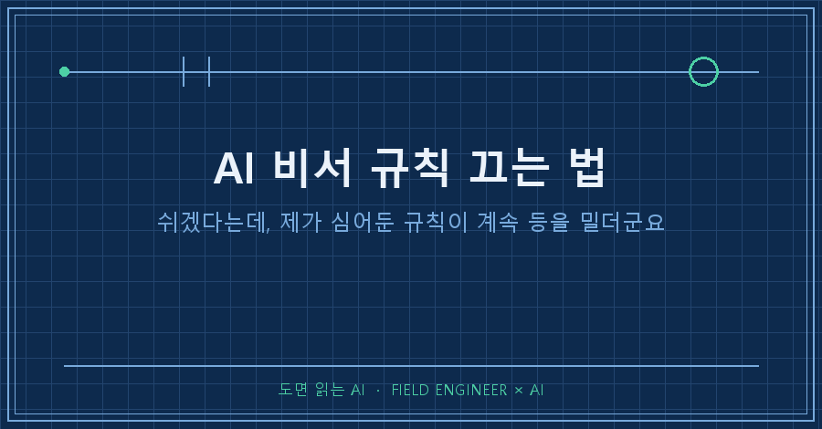
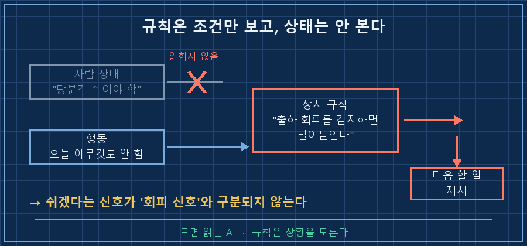
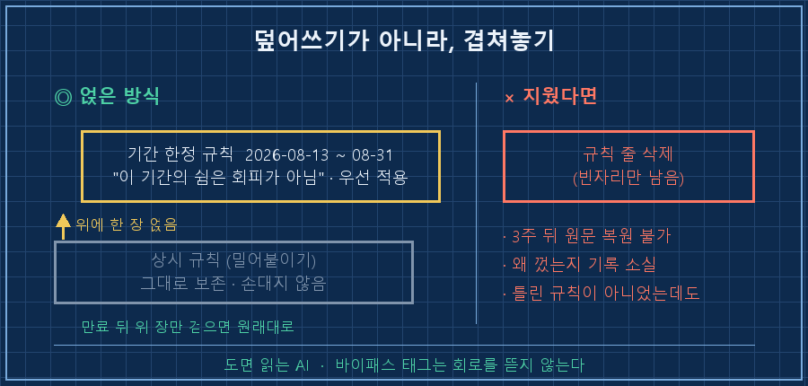
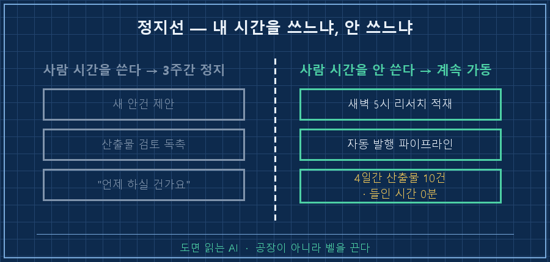

3주만 쉬기로 한 날 아침, 제 AI가 제일 먼저 꺼내준 건 다음 할 일 목록이었습니다. 몇 달 전에 제 손으로 심어둔 AI 비서 규칙이 그렇게 시켜놨거든요.
답부터 떼어놓을게요.
AI 비서 규칙은 상황이 바뀌었다고 지우는 게 아니라, 기간과 사유가 적힌 규칙을 한 장 위에 얹는 겁니다. 지워버리면 3주 뒤에 원래 문장이 뭐였는지, 왜 껐는지가 통째로 사라지거든요. 저는 그 줄을 지울 뻔했다가 커서 올려놓고 멈췄습니다.
제어반 앞에서 십오 년을 보냈어요. 사람한테 부탁하는 것보다 기계한테 조건을 적어주는 일이 훨씬 많은 직업입니다.
그 바닥에 바이패스 태그라는 게 있어요. 정비하려고 안전장치 하나를 잠깐 죽여야 할 때, 회로를 뜯어내지 않고 꼬리표를 겁니다. 누가, 왜, 언제까지 죽였는지 적어서요. 이번에 제가 AI한테 한 일이 정확히 그거였습니다.
2026년 8월 이야기고, 특정 제품 얘기는 아니에요. 사용자 지침이든 메모리 파일이든, AI가 대화를 시작할 때마다 읽는 규칙이 있으면 전부 해당됩니다.
1. 제가 심어둔 문장이 저를 밀고 있었어요
몇 달 전에 제 AI한테 역할을 하나 맡겨뒀습니다. 파일에 적혀 있는 원문이 이래요.
- 엄마 잔소리 역할 유지: 빌드 과잉·출하 회피를 감지하면 밀어붙인다.
"확신 들 때까지 생각"은 회피 루프이므로 불허.제가 시킨 겁니다. 저는 준비가 덜 됐다는 이유로 한없이 미루는 쪽이라, 그걸 회피로 규정하고 등을 떠밀어달라고 부탁했어요. 효과도 좋았고요.
그런데 8월 들어 상황이 바뀌었습니다. 봄에 셋째가 태어난 뒤로 잠이 계속 모자랐고, 본업에 나머지까지 얹히니까 몸이 먼저 신호를 보내더라고요. 그래서 이달 말까지는 업무 외의 것들을 다 내려놓기로 했습니다.
문제는 제 AI가 그 사정을 모른다는 거였죠.
규칙은 상태를 안 봅니다. 제가 쌩쌩한지 뻗었는지 판단하지 않고, 조건이 맞으면 그냥 발화해요. 쉬겠다는 말은 규칙 입장에선 "출하 회피 신호"와 구분이 안 됩니다. 제가 그렇게 적어놨으니까요..
현장에도 똑같은 장면이 있어요. 일부러 세워놓고 정비 중인데 경보반은 "왜 안 도느냐"고 계속 우는 상황이요.

2. 지우려다 손을 멈췄습니다
첫 반응은 당연히 "그 줄 지우자"였어요. 파일 열고 커서까지 올려놨습니다.
근데 세 가지가 걸리더라고요.
- 3주 뒤에 저 문장을 똑같이 복원할 자신이 없었어요. 여러 번 다듬어 만든 문장이거든요
- 지우면 왜 껐는지가 안 남습니다. 나중의 제가 열어보면 그냥 처음부터 없던 규칙이에요
- 무엇보다 이 규칙은 틀려서 끄는 게 아니었어요. 지금만 안 맞는 거지..
그래서 지우는 대신 파일을 하나 새로 만들었습니다. 기간이 박힌 규칙 한 장이요. 개인적인 내용은 걷어내고 뼈대만 옮기면 이런 모양입니다.
name: 회복 기간 2026-08
description: 2026-08-13 ~ 08-31 회복 기간
— 업무 외 영역의 독촉·신규 제안 금지, 전 대화 공통 적용
type: project
- 이 기간의 쉼은 회피 신호가 아님 (기존 '밀어붙이기' 규칙보다 이 문서가 우선)
- 본업 요청은 정상 수행하되, 업무 외 확장 제안을 얹지 말 것
- 9월 1일 이후 자동 재개 아님 — 상태 확인 후 다시 정한다적고 보면 별것 아닌데, 저 세 줄이 다 필요했습니다.
첫 줄은 해석을 못 박는 문장이에요. 이게 없으면 AI는 제 휴식을 예전 규칙대로 회피라고 읽습니다. 둘째 줄은 적용 범위고요. 셋째 줄이 뒤에서 다시 얘기할 만료 처리 문제입니다.
AI 비서 규칙을 손볼 때 제일 자주 빠뜨리는 게 첫 줄 같아요. 새 규칙만 덜렁 적어두면 예전 규칙이랑 나란히 서서 서로 자기가 맞다고 하거든요.

3. 정지선을 어디에 그을지가 제일 어려웠어요
여기서 한 번 더 막혔습니다. 쉰다고 전부 끄면, 몇 달 걸려 굴려놓은 것들이 나흘이면 식어버리거든요.
그래서 기준을 하나로 잡았어요. 내 시간을 쓰느냐, 안 쓰느냐.
사람이 읽고 판단하고 답해야 하는 건 전부 정지. 사람 손이 안 들어가는 무인 작업은 그대로 두기로 했습니다.
| 구분 | 3주간 멈춘 것 | 그대로 둔 것 |
|---|---|---|
| 성격 | 제안·독촉·검토 요청 | 무인 실행 |
| 예 | 새 안건 제시, 산출물 확인 재촉, "이건 언제 하실 건가요" | 새벽에 도는 글 생성, 매일 한 편씩 쌓이는 리서치 |
| 이유 | 제 판단력과 시간을 씁니다 | 제 시간을 0분 씁니다 |
이렇게 갈라놓고 나흘 뒤에 실제로 뭐가 남았는지 확인해봤어요. 파일 목록만 뽑아보면 되니까요.
2026-08-13 05:02 사례\2026-08-13_....md
2026-08-14 05:02 사례\2026-08-14_....md
2026-08-15 05:03 사례\2026-08-15_....md
2026-08-16 05:03 사례\2026-08-16_....md매일 새벽 5시에 리서치가 한 편씩 그대로 쌓였고, 같은 나흘 동안 자동으로 나가는 글도 여섯 편이 발행됐습니다. 제가 들인 시간은 0분이었고요!
쉬는 동안 공장이 멈춘 게 아니라, 저를 부르는 벨만 꺼진 겁니다.

4. 만료일은 넣되, 자동 복귀는 막았어요
바이패스 태그 얘기를 마저 하면, 현장에서 그 꼬리표에 반드시 적는 항목이 복구 예정일입니다. 안 적으면 영영 안 걸린 채로 남거든요. 그래서 저도 8월 31일이라고 못 박았어요.
여기에 한 줄을 더 넣었습니다. "9월 1일에 자동으로 켜지지 않는다"는 조항이요.
날짜만 적어두면 그날 아침부터 예전 규칙이 그대로 살아납니다. 제 상태가 어떻든 상관없이요. 그건 지금이랑 똑같은 사고예요, 시점만 3주 미뤄둔 거고..
그래서 만료일의 뜻을 "복귀"가 아니라 다시 정하는 날로 적었습니다. 정비 끝났다고 바로 자동 기동 걸지 않고, 사람이 상태 확인하고 올리는 것과 같은 순서예요.
이런 것도 궁금하실 것 같아요
Q. 그때그때 "오늘은 좀 쉴게"라고 말하면 안 되나요?
그 대화에서는 먹힙니다. 문제는 다음 대화예요. 창을 새로 열면 AI는 파일에 적힌 규칙부터 읽고 시작하거든요. 말로 한 부탁은 거기 없고요.
겪어보니 하루 이틀짜리면 말로, 몇 주짜리면 파일로 갈리더라고요.
Q. 규칙끼리 부딪히면 AI는 뭘 따르나요?
순위를 안 적어두면 둘 다 지키려다 어정쩡해집니다. "푹 쉬셔야죠" 해놓고 바로 다음 할 일을 붙여주는 식이요.
그래서 새 규칙 안에 "기존 규칙보다 이 문서가 우선"이라는 문장을 넣었습니다. 사람이 순위를 정해주면 그다음부터는 꽤 정확하게 지켜요.
정리하면요
3주 쉬겠다고 마음먹은 날 제가 실제로 한 작업은 파일 한 장 만든 게 전부였습니다. 기간, 사유, 우선순위, 만료 후 처리. 딱 네 줄이요.
지웠으면 그날은 편했을 텐데, 그랬으면 9월의 제가 뭘 왜 껐는지 기억 못 했을 겁니다.
AI한테 "나를 이렇게 굴려줘"라고 규칙을 심어두신 게 있다면 오늘 한번 열어보세요. 그 문장을 쓸 때의 나와 지금의 내가 같은 상태인지, 그것만 보면 되거든요!
저는 달랐습니다.. 규칙은 그대로인데 사람이 바뀌어 있더라고요.
다음 편에서는 이렇게 만든 기간 한정 규칙이 3주 뒤에 실제로 잘 걷혔는지, 만료 처리 기록을 그대로 들고 와볼게요.
---
켜둔 자동화보다 잠깐 꺼둔 자동화 얘기가 더 자주 올라오는 곳, makefield.ai입니다.
태그: #AI비서규칙 #AI규칙설정 #AI메모리관리 #AI에이전트 #커스텀지침 #AI에게일시키기 #AI자동화관리 #무인자동화 #개인AI에이전트 #AI규칙충돌 #AI활용법 #AI로일하기 #자동화정리 #현장엔지니어 #도면읽는AI